Projector Review
JMGO IRIS Ultra Max Review
Disclosure: JMGO provided this projector for me to review. Everything written in this review is from my own experience. As an JMGO Partner Affiliate, I earn from qualifying purchases. As an Amazon Associate Affiliate, I earn from qualifying purchases.
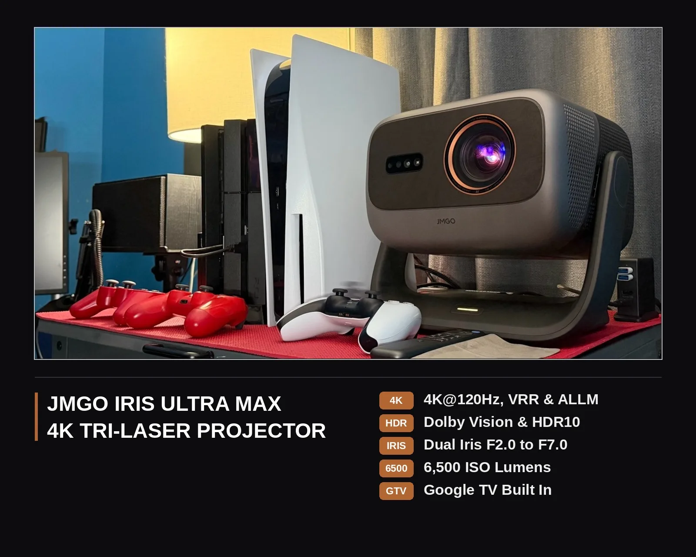
Hi everyone. I have been testing the JMGO IRIS Ultra Max on a 120 inch screen, and I am ready to share my findings.
What makes this projector different is the dual iris. Most projectors in this style pick the balance between brightness and contrast for you. This one lets you pick it yourself. The iris adjusts from F/2.0 to F/7.0, and I found myself using it on just about everything I watched.
Quick spec rundown, with the full list in the Key Specs box below. It is rated at 6,500 ISO lumens with a 10,000:1 native contrast ratio and 110% BT.2020 color from the tri laser engine. Dolby Vision and HDR10 are both supported. For gaming it does 4K at up to 120Hz with VRR and ALLM.
I tested it the way I test everything, in a real room on a real screen, with a set of test clips, movies I know well, a PS5, and a PS4 for 3D. The full spec list is in the Key Specs box below. What follows is what it is actually like to use.
Where to buy
Key specs
- Brightness: 6,500 ISO lumens, measured in Dynamic mode per ISO 21118
- Light source: Triple Laser, MALC 6.0 engine
- Display: 0.47 inch DLP, pixel shifted 4K (3840 x 2160) at up to 120Hz
- Native contrast: 10,000:1
- Color: 110% BT.2020, Delta E 0.7 or less
- Throw: 0.88 to 1.7:1 with optical zoom, 40 to 300 inch image
- Lens shift: plus or minus 130% vertical, plus or minus 53% horizontal, as listed by JMGO
- HDR: HDR and Dolby Vision (4K 120Hz)
- Smart platform: Google TV 5.0, 4GB RAM, 64GB storage
- Connectivity: Wi-Fi 6, Bluetooth 5.4, USB 3.0, 2 x HDMI 2.1 (one port supports eARC), 3.5mm audio
- Gaming: VRR, ALLM in Game Mode, MEMC 120Hz
- Audio: 2 x 12.5W speakers, Dolby Audio, DTS-X. Dolby Atmos is decoding and passthrough only
- 3D: Frame Packing, Side-by-Side and Top-and-Bottom
- Noise: 26 dB or less
- Power: 300W, AC 100 to 240V, 50/60Hz
- Size and weight: 308 x 230 x 274 mm (device only), 7 kg
Build quality and setup
Unboxing and what is in the box
The projector was packed very well, and enclosed is the foam case with a printed sleeve around it, which holds the projector. The case is sturdy enough that I would not think twice about carrying the projector around in it, which matters for a unit I am going to call a grab and go pick later in this review.
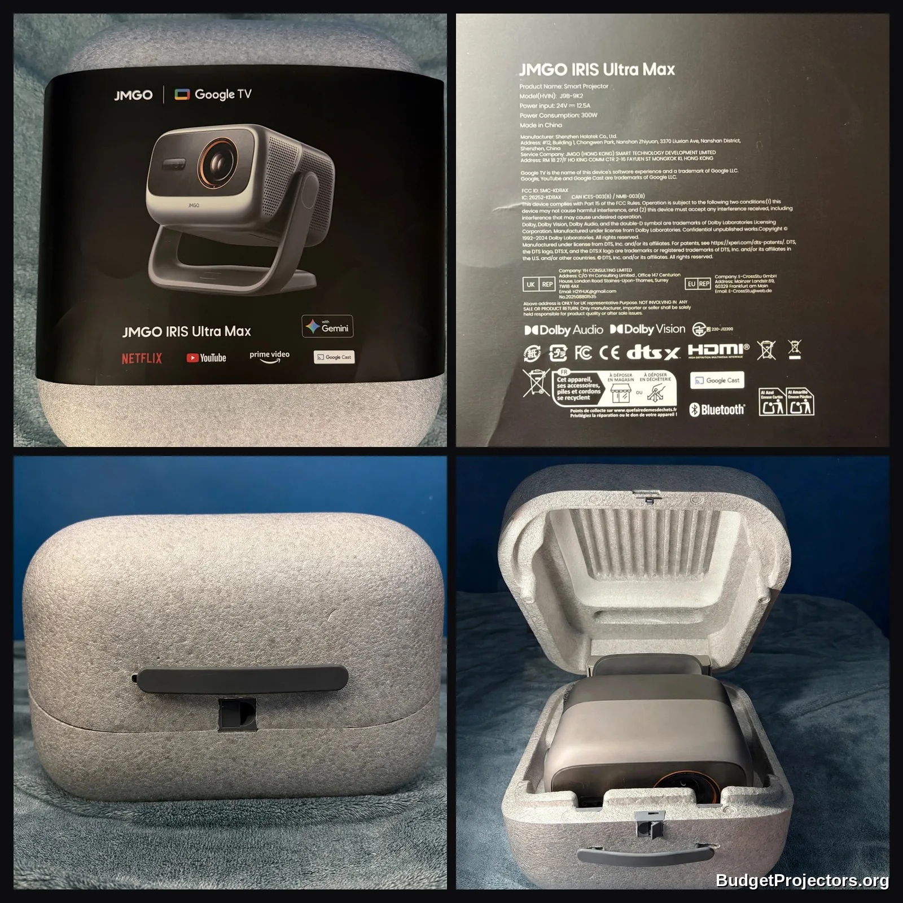
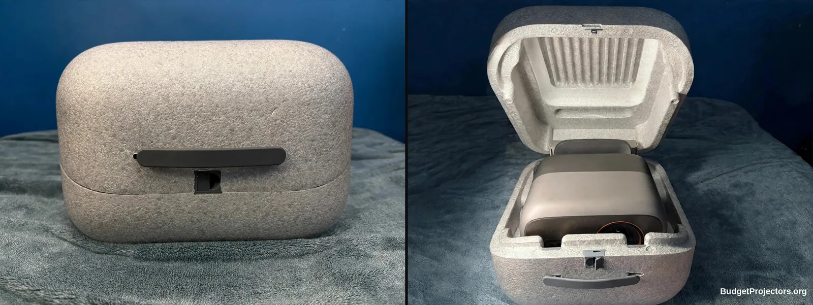
In the accessory box you get the remote, two AAA batteries, a Quick Start Guide, a JMGO polishing cloth in its own envelope, and the power supply with a removable power cord. The remote is all plastic, with a circular D pad, shortcut buttons for Netflix, YouTube, and Prime Video, a Free TV button, and a mic button. The power cord is a standard desktop power cord (IEC C13). I always like to see that, because if you lose it or need a longer one, replacements are cheap and easy to find.
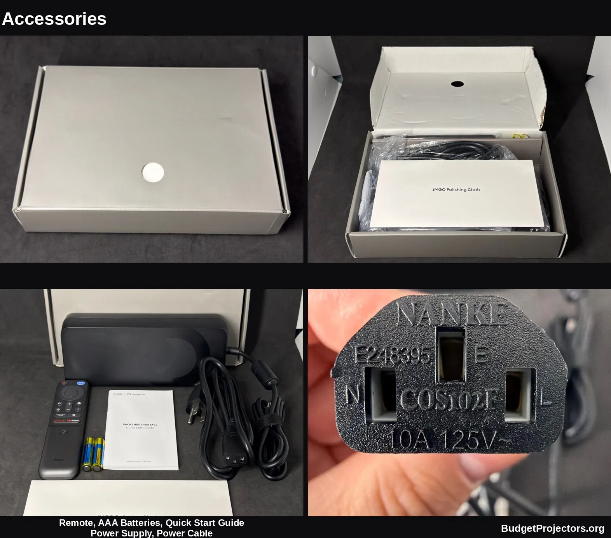
I weighed everything on my scale. The projector is 15 lb 8.3 oz, close to the 7 kg JMGO lists. The power supply is 2 lb 0.0 oz by itself and 2 lb 5.1 oz with the cord, so call it about 17 and a half pounds all in when you carry the whole setup. The remote is 2.6 oz without batteries and 3.4 oz with the two AAA batteries in.
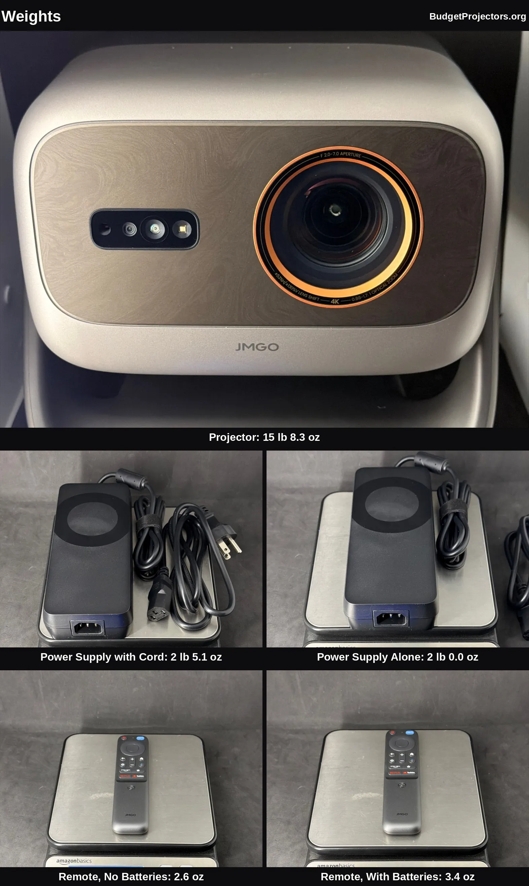
Design and connections
The front of the projector has a light wood grain style panel. The sensor cluster sits in a black window on the right, and the lens sits on the left with a copper colored ring around it marked F 2.0-7.0 APERTURE. The front finish looks great.
The body sits on a powered gimbal base. All of the connections are on the back of the base. For cable management, the base moves when the projector adjusts on the gimbal, so plan on using cables with enough slack available so nothing gets pulled tight. From left to right on the base you get an HDMI port with eARC, a second HDMI port, a USB 3 port, a 3.5mm audio jack, and the power port.
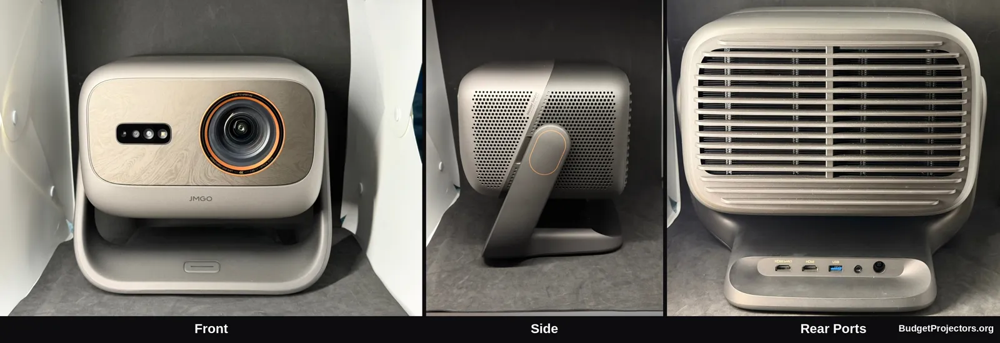
There are a few ports I wish it had. There is no USB C port, just USB A. There is no network port for a wired connection, so it is Wi-Fi only. And there is no optical audio out for older soundbars and receivers. Audio out is HDMI eARC or the 3.5mm jack. None of these stopped me from using it the way I wanted, but they are worth knowing before you buy.
The gimbal tilt range is wide in both directions, which you can see in the photos. Between the gimbal, the optical zoom, and the lens shift (plus or minus 130% vertical and plus or minus 53% horizontal), placement is flexible. You do not have to have this projector in one exact spot for it to work.
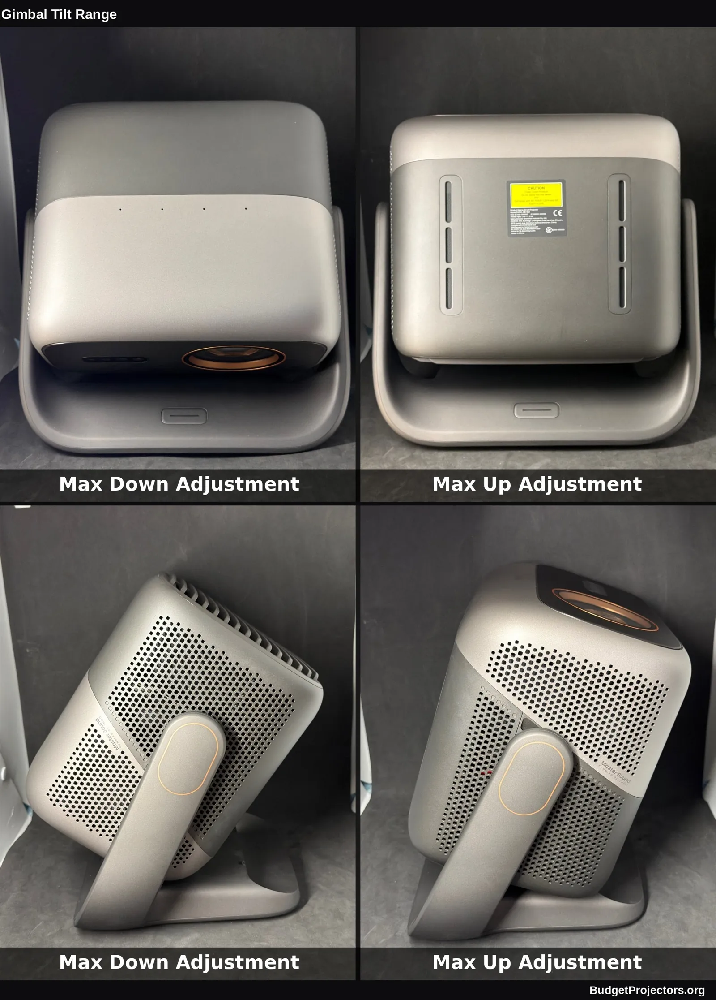
Setup
Setup was easy. The first thing the projector asks is to pair the remote, and that took no time at all. Just follow the on screen instructions. Smart eye protection is on by default, which is a good default for a laser projector in a home where kids or pets walk around.
Then it is the standard Google TV setup. You pick your region, and the projector offers a QR code for quick setup using the Google TV app on your phone, or you can do it manually with the remote. If you are new to Google TV, the quick path needs the Google TV app on your phone. The manual path asks for your Wi-Fi password, then the Google sign in screen. Two things to know going in: there is no option to skip the Google sign in during the first setup, and you need an internet connection to get through it. After sign in you pick which apps to download.
After that, the projector walks you through the image setup on screen. Lens shift up, down, left, and right, plus the optical zoom, step by step. The zoom range is pretty generous, it runs from 0.88 to 1.7:1, and it made fitting my 120 inch screen easy. Then you get the adjustment menu with Auto Screen Fitting, Manual Keystone Correction, and Manual Focus.
Auto Screen Fitting is the feature I would point most people at. A test pattern comes up, and the projector fits the image to your screen using the zoom lens and the gimbal together, not just digital correction. It fitted my 120 inch screen edge to edge. It is basically the figure this part out for me option, and it works. Manual keystone is a four point correction where you move each corner dot one by one, with an undo option, if you would rather do it yourself.
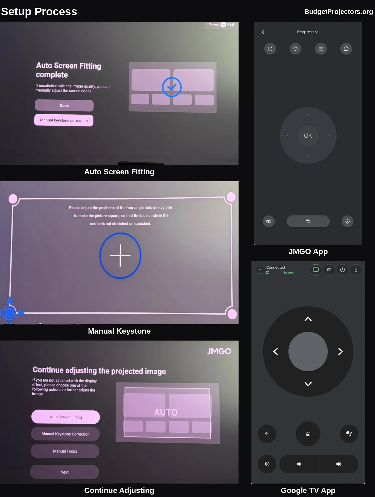
After setup a prompt for the JMGO app comes up. The JMGO app gives you a keypad that mirrors the remote, plus a swipe gesture mode. The Google TV app also works as a remote for this projector, so you have options beyond the physical remote.
When I got to the home screen I checked Settings and About and found a firmware update waiting, version 1.1.51.1. I installed it before I did any testing. The release notes just say bug fixes.
Picture quality
Note: the pink hue in the white areas of the screen photos in this review is normal when captured from camera. The colors are accurate in person.
The dual iris
The iris menu is a DUAL panel with Brightness and Contrast bars, and the two bars move against each other as you change stops. At F/2.0 the brightness bar is full and the contrast bar drops to about a third. At F/7.0 the contrast bar is full and the brightness is at its lowest. Everything in between is a trade you get to make yourself.
And you can see it. On the same frozen frame, going from F/2.0 to F/7.0 takes a washed out dark scene to one with proper blacks. On a bright scene you give up punch as you close down. Across everything I tested, F/5.0 was the sweet spot more often than not. F/6.0 also looked great on darker scenes. You will see that pattern in every set of photos below.
One behavior to know about: at F/6.0 and F/7.0 the projector automatically adjusts brightness and AI Dynamic Black Level is disabled. It tells you with an on screen notice when you enter those stops. It does not make those stops unusable. F/6.0 was one of my favorite stops on dark scenes. But you should know the projector changes its processing there.
Scene by scene
Dune Part Two, dark scene. The Feyd close up in the dark is a real contrast test. F/5.0 and F/6.0 looked best to me here. The blacks get deeper as you stop down, and by F/7.0 the scene gives up more brightness than it wants to.
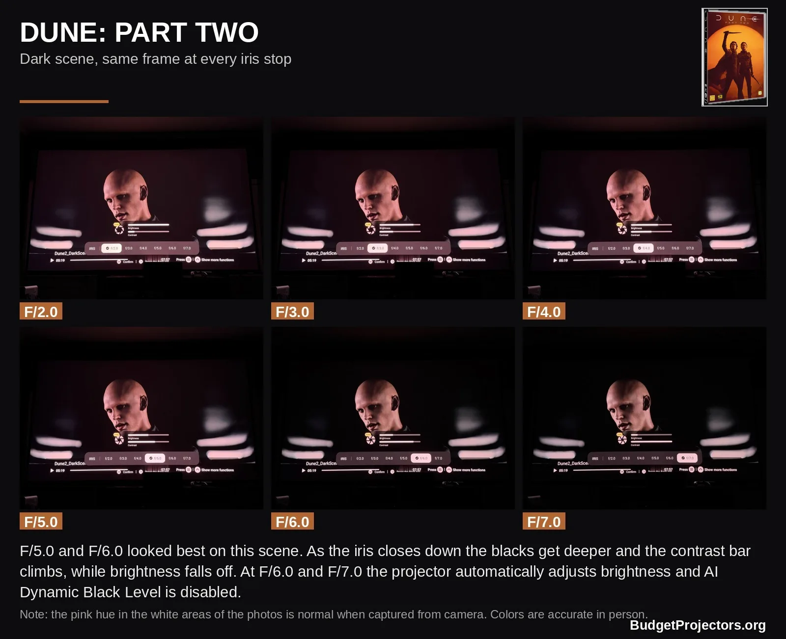
Dune Part Two, bright scene. On the bright Giedi Prime close up, the wider stops keep the highlights strong and F/5.0 is the sweet spot again. Even on a bright scene the iris gives you a usable range. It is not one right stop and six wrong ones.
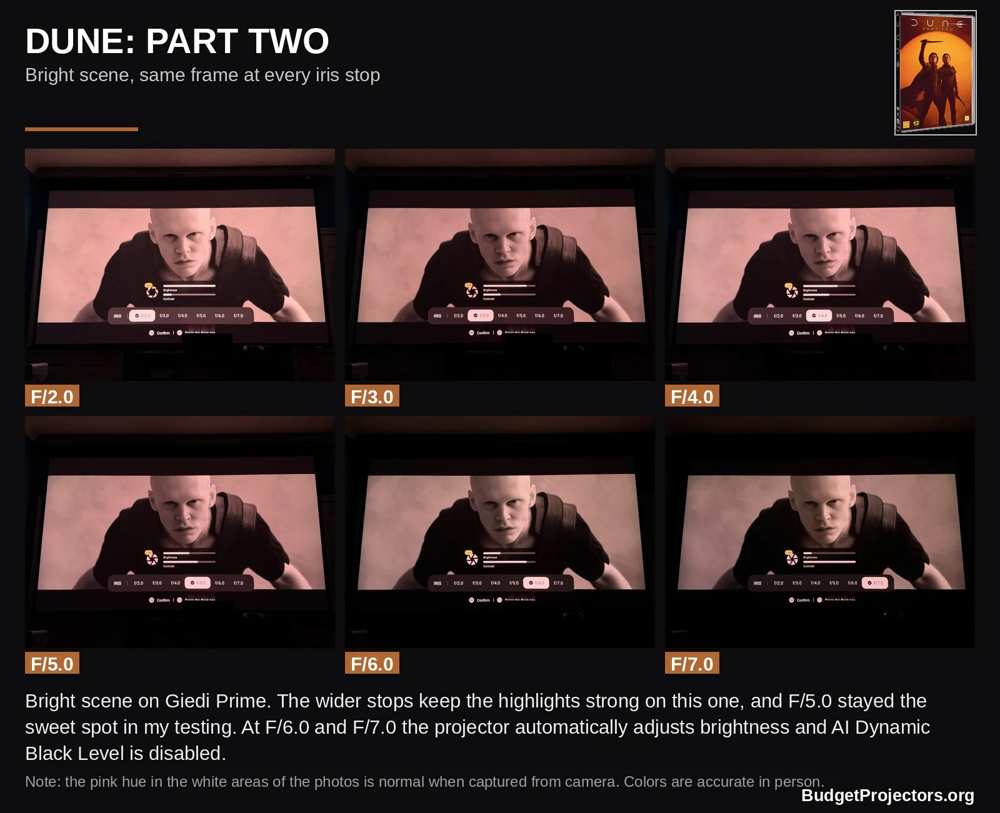
Toy Story 4, bright daylight RV scene. Colors stay vivid across the whole range, and the picture holds its brightness until the last two stops. This is the kind of content where you run it more open and enjoy the brightness.
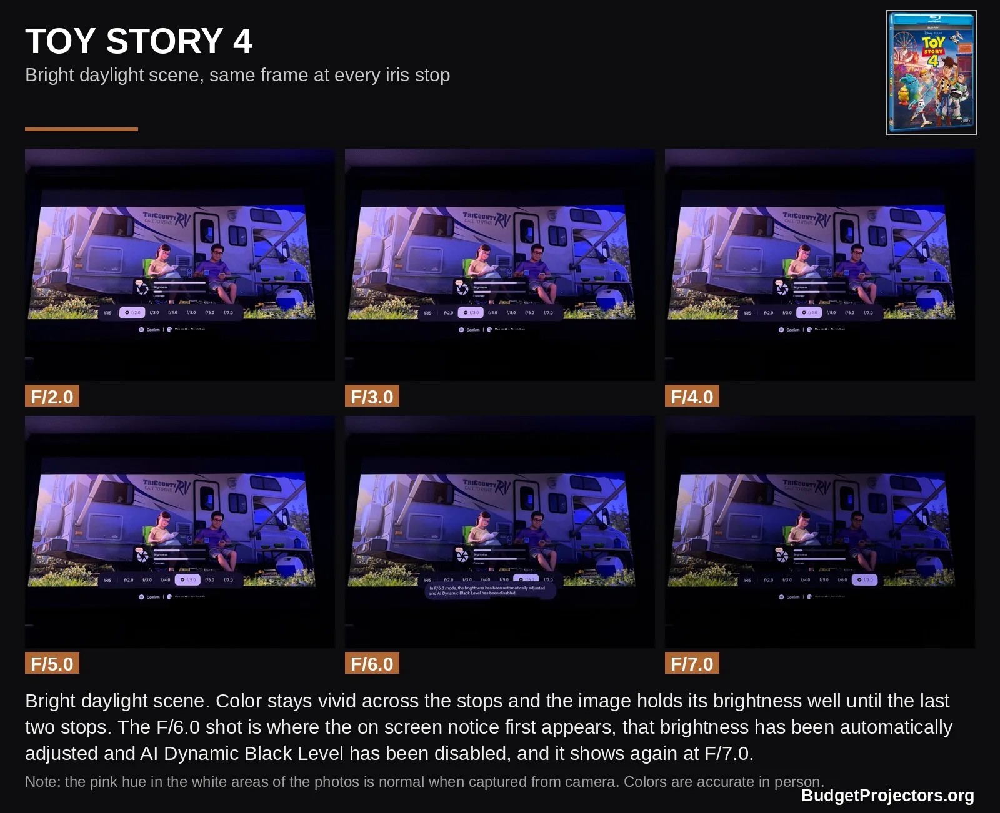
Toy Story 4, dim lamp scene. The Bo Peep lamp scene is mostly shadow with one warm light. The closed stops deepen the shadows and the lamp glow still holds. The scene gains mood without losing the light.
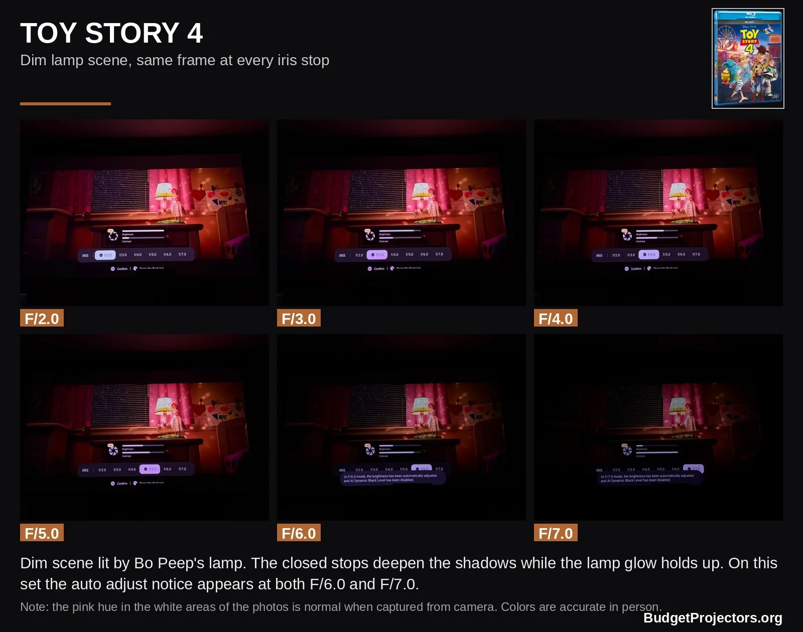
Oppenheimer, bright close up. Detail holds up across the entire range here, even stopped all the way down at F/7.0. Skin detail and texture stay put.
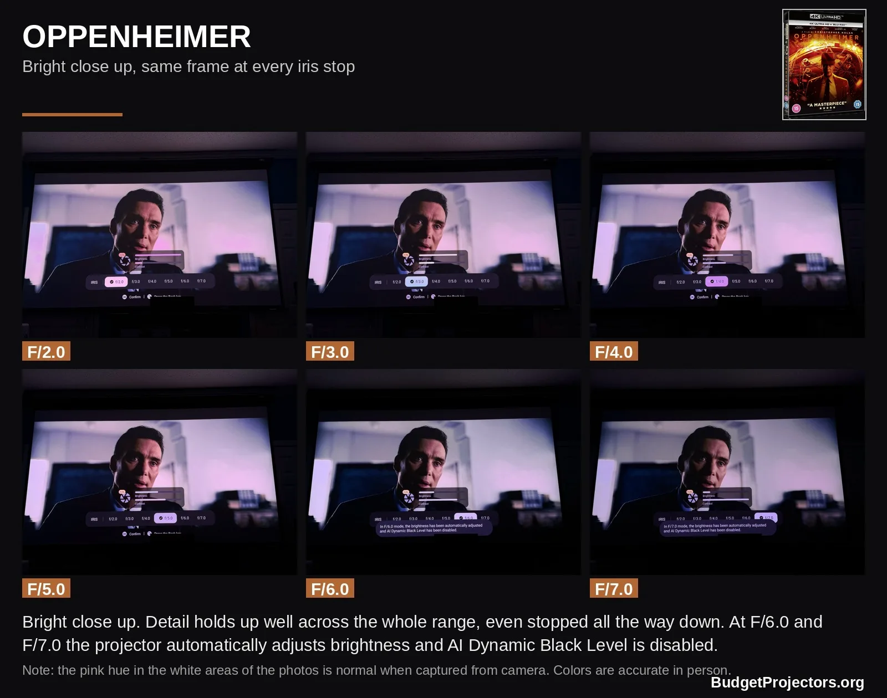
The Dark Knight Rises, daytime exterior scene. The funeral scene deepens as the iris closes. The blacks go down and the highlights on the uniforms hold. A good demo of what the contrast side of the trade buys you.
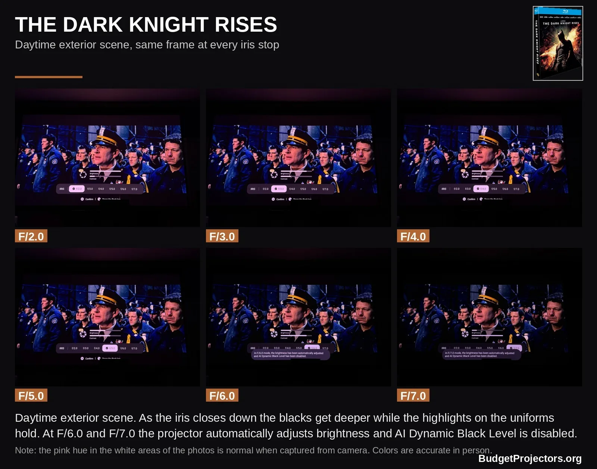
Interstellar, 4K HDR. The wormhole clip close up of Brand in the helmet looked really awesome at F/5.0. Sharp detail in the suit and visor, natural skin tone, and deep blacks around the cabin. This is the clip I would show someone first.
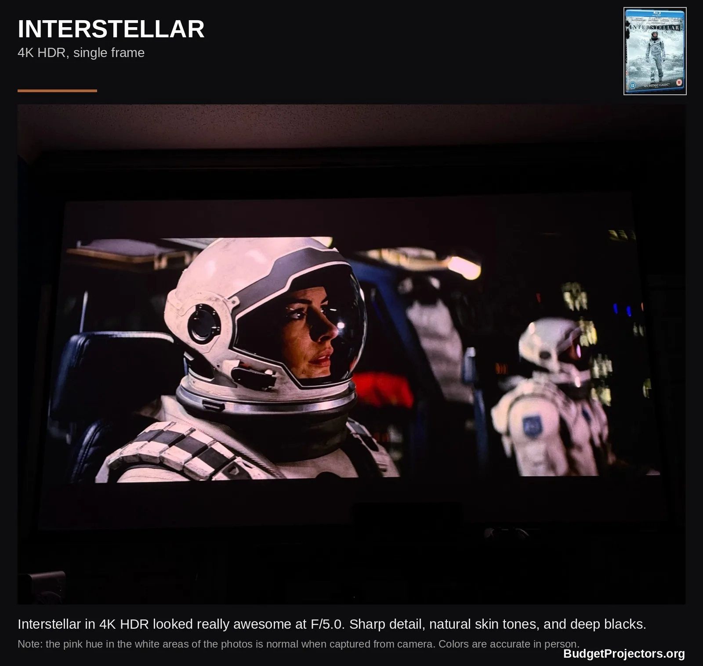
Alien Romulus. I ran the opening clip in Dolby Vision, HDR10 Plus, and 1080p SDR. On the Dolby Vision version, F/5.0 was my pick on the dark station frame. The HDR10 Plus version plays as HDR10, because the projector plays the HDR10 base layer and does not decode HDR10 Plus. The 1080p SDR version looks sharp for 1080p, with less detail than the HDR versions.
The Lord of the Rings: The Rings of Power. The bleeding scene is an extremely dark scene, near monochrome even in the source. I ran the Dolby Vision 8.1, Dolby Vision 5, and SDR versions, and honestly I could not see a difference between the three on this scene. It was also too dark to capture usefully on camera, so this one is a written finding only.
HDR formats, motion, and picture settings
Dolby Vision played right on the content that has it. HDR10 Plus content plays as HDR10, like I noted above. If HDR10 Plus support matters to you, that is a limitation to weigh. Everything else I threw at it handled clean.
For motion, I tested MEMC mostly at the Low and Medium settings. Image judder was revealed with slower camera pans when MEMC was turned off. Low was better, but the judder was still there. Medium looked the best, smooth without going too far. Above Medium it looked too artificial. I would plan on Medium for movies with a lot of panning.
For picture settings, I ran the white balance on Standard most of the time and switched to Movie depending on the content. One mode I did not care for is Vivid Bright. It kicks up the fan noise and the picture runs too blueish. The standard modes are better balanced.
Lights on viewing
A lot of people will not watch in a fully dark room, so I ran the Spider Man 2 Times Square frame again with the room lights on, at every stop. The picture gets less bright as the iris closes, and it brightens back up as the iris opens. With the iris opened up, the image holds up with the lights on. So the rule is simple. Dark room, stop it down toward F/5.0 and enjoy the contrast. Lights on, open the iris up and let the brightness work.
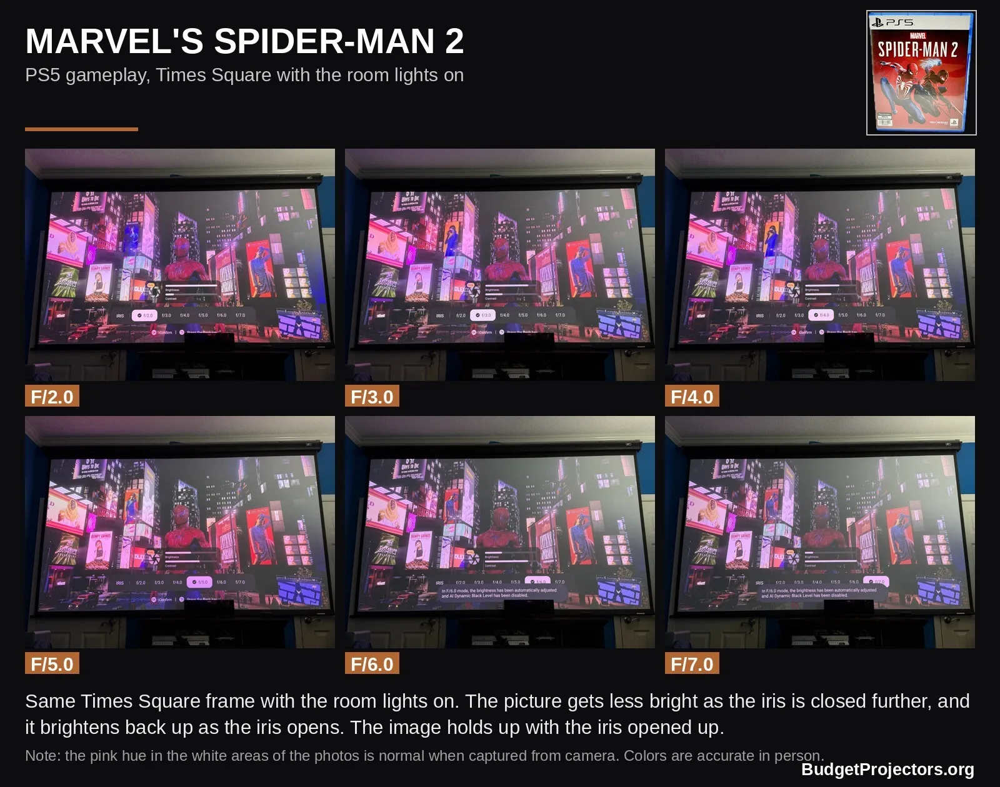
Features and daily use
Gaming
Gaming is a strong point here. The PS5 reports a full 4K signal with VRR and RGB HDR from this projector, so it is getting the full signal and not a cut down version. The game overlay gives you Low Latency (Off, Normal, Extreme), ALLM, VRR and FreeSync, High Refresh Rate, a Game Picture Mode (I used FPS Game), Dark Detail Enhancement, and crosshair options. I turned High Refresh Rate on, and in game, 120Hz was detected.
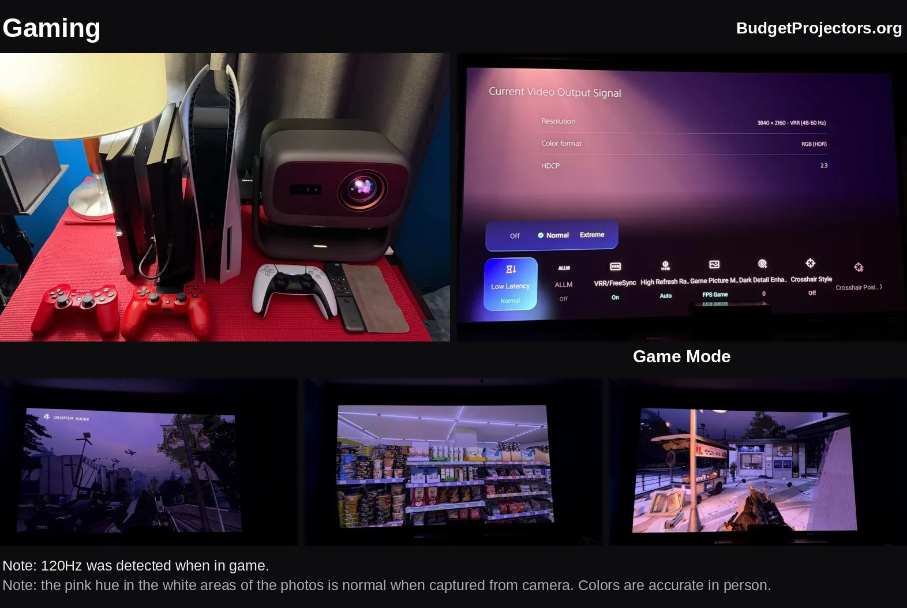
In actual play, motion feels fine with game mode on and I felt no input delay. On rainbow effect, since this is a DLP: I do not see any while my eyes are focused on the screen. If I glance off the screen and back, I catch it very briefly, and it is not bothersome. If you are very rainbow sensitive, that glance away and back is when you would notice it.
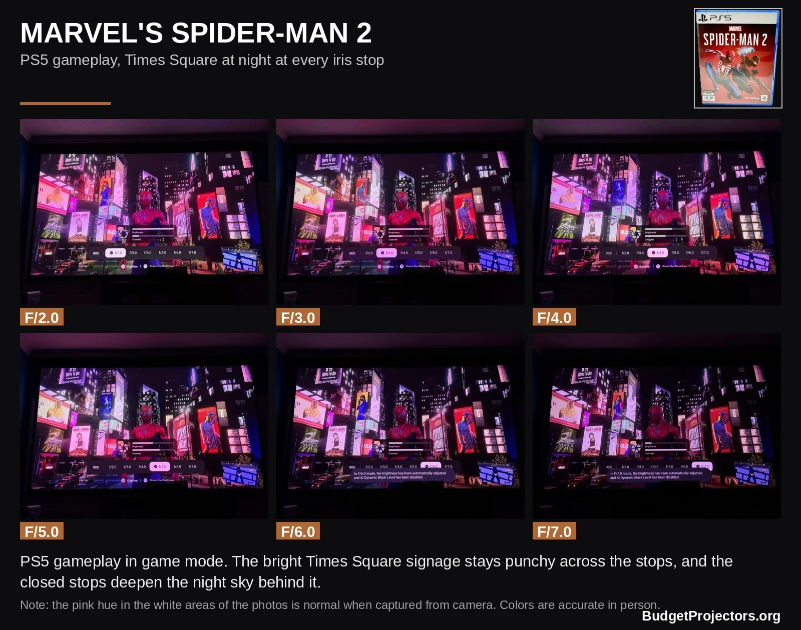
3D
3D still has a real audience, and this projector does it properly. I tested with a PS4 playing Sing on Blu ray 3D. The projector detected that a 3D device was connected, and under Settings, Display, 3D Mode I selected Blu ray 3D. One tip for PS4 owners: I had to set the 3D screen size in the PS4 menu to match my screen, 120 inch, for the 3D image to line up right.
The 3D itself looks great. Colors look nice in 3D, the depth effect is good, and there is lots of brightness available even at F/5.0. That matters because 3D glasses cut the light. Plenty of projectors go too dim in 3D. This one does not, at the stop I already prefer. I would definitely recommend this for 3D use. I tried to get photos of the 3D image and they were too difficult to capture in a way that shows it fairly, so this section stands on the written findings.
Sound
The built in speakers sound great. At higher volumes you lose a little bit of bass, but for quiet and even moderate listening the speakers are excellent. For a grab and go setup or a bedroom, the built in audio is honestly enough. In a dedicated theater you will run eARC to your system anyway, and that is there.
Fan noise
The fan is noticeable at the higher laser power levels. It reduces at around the halfway mark and lower, so in the range most movie watching happens at, it settles down. Vivid Bright mode is the exception that pushes the fan up, which is another reason I left that mode alone.
Daily use
Day to day, Google TV does what Google TV does. The auto fitting means I do not have to fuss with the image when I move the unit, and the gimbal and lens shift make it forgiving about where it sits.
Who is this for
This projector is for two buyers. The first is someone who wants an easy grab and go setup. Set it down, let Auto Screen Fitting do the work, and watch, with speakers good enough to skip the soundbar. The second is someone looking for a TV replacement to pair with a home theater setup, who will run it on a bigger screen in a dim to dark room and use the iris to get real contrast out of it. Gamers get the full PS5 signal, 120Hz in game, and no felt input delay. And 3D fans get a projector that is still bright in 3D, which is getting rare.
It is less for you if you need a wired network connection, USB C, or an optical output for older gear, or if native HDR10 Plus decoding is a must have.
Final verdict
The IRIS Ultra Max is the ideal projector for just about anyone. It is packed with features, it is easy to set up and move around, and it is bright enough for most rooms. In a dark room the picture is incredible, and it holds up fine with the lights on too. It is great for gaming as well. I would recommend it as a grab and go projector or as a TV replacement in a home theater setup.
The honest downsides are short. No USB C, no Ethernet, and no optical out. HDR10 Plus plays as HDR10. Vivid Bright mode is too blue and loud. None of them change the verdict. The dual iris is the feature I will be measuring other projectors in this style against, because picking your own brightness and contrast balance for each movie and each room is worth more than one more preset mode.
Where to buy
Disclosure: As an JMGO Partner Affiliate, I earn from qualifying purchases. Disclosure: As an Amazon Associate Affiliate, I earn from qualifying purchases.
For more info or questions about this projector, or help picking one for your room, book a consultation or contact me and I would be happy to offer some suggestions.